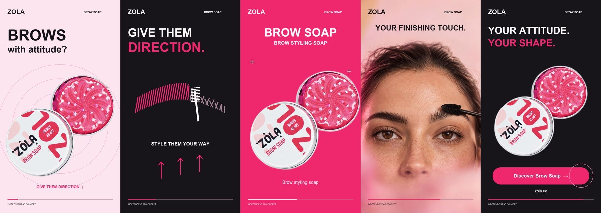

Brows with attitude.
The brief
Introduce ZOLA Brow Soap Mini to English-speaking beauty shoppers. Make the product recognizable and invite viewers to explore it on the official store.
The hook
“Brows with attitude?” followed by “Give them direction.” The opening connects a familiar styling need with self-expression.
The creative decision
Pair the official packshot with kinetic type, an abstract brush sweep, and a four-second generated brow-styling clip. Pink, black, and white echo the real packaging.
The next step
Discover Brow Soap → zola.ua
One product. One clear shopping invitation.
The story in five beats.

- 0-2.6 sHook + product entrance
- 2.6-5.8 sGraphic brush sweep
- 5.8-7.4 sProduct close-up
- 7.4-11.4 sGenerated styling clip
- 11.4-15 sProduct + call to action
What I would test
Compare the personality-led hook with a direct product introduction. Keep the rest of the edit fixed; assess early retention and product-page click-through. No campaign has run and no performance results are claimed.
Production + transparency
Official ZOLA product photo; animated graphics; AI-generated portrait and supplied generated styling video; original synthesized soundtrack. The styling scene is a concept visual, not verified evidence of product results.
SourceZOLA official product page - Brow Soap Mini, 25 g